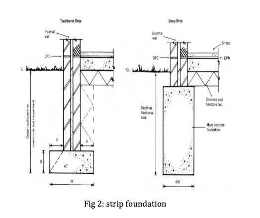

Shallow Foundation
Strip Foundation
Strip foundation which is also called as strip footing which is sub category of shallow foundation are use to provide continuous level or stepped strip of support to a linear structure for example walls or closely spaced rows or columns built in centre above them. Strip foundations can be done in mostly all sub soils, but a soil of good bearing capacity is suitable. This type of foundation is generally used for the construction of medium or low rise domestic buildings.
The underside of strip footing should be deep so that frost action does not take place. The position and size of strip foundation depends upon the overall width of the wall. The old or traditional strip foundation is basically equal or greater than overall wall width and also the foundation width is three times the width of the supported wall.

Advantages of Strip Foundation
- Ability to withstand great loads.
- They have subtypes from which you can choose the one you need for particular purposes.
- The price is much lower than that of cast-in-situ structures, although strip foundations are not inferior to them in strength.
- Easy to build, no special training requirements for personnel.
- Very long service life.
- You can insulate the floors much better if you use a strip foundation.
Disadvantages of Strip Foundation
- Not suitable for every soil type.li>
- You have to do the filling on a single go and the amount of material to prepare for filling is a problem.
- It is only suitable in low rise buildings.